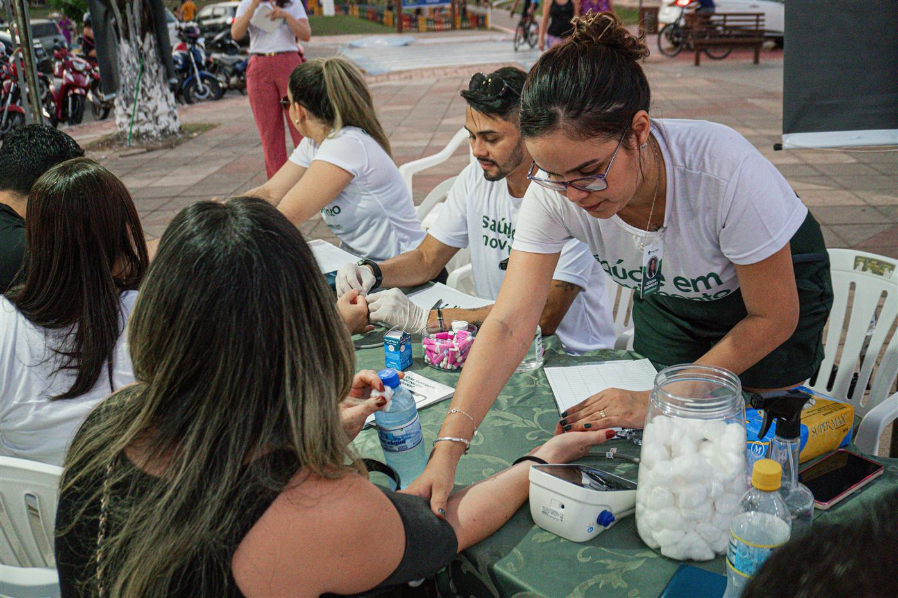
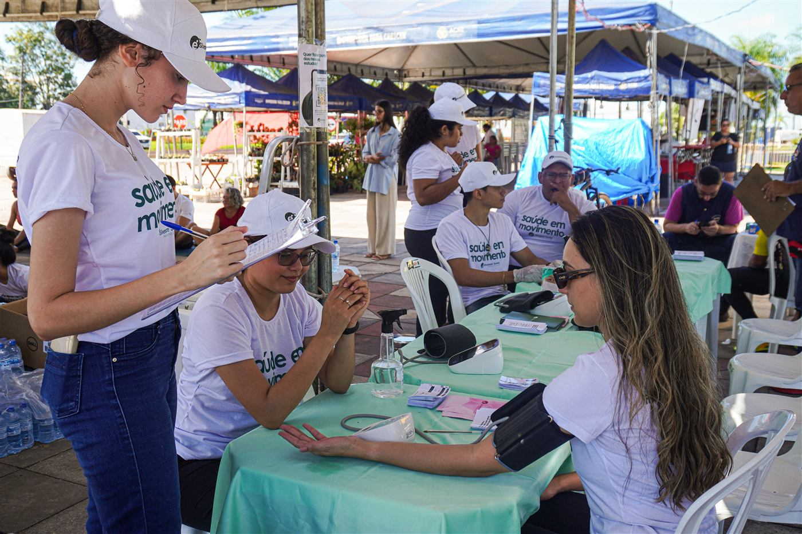
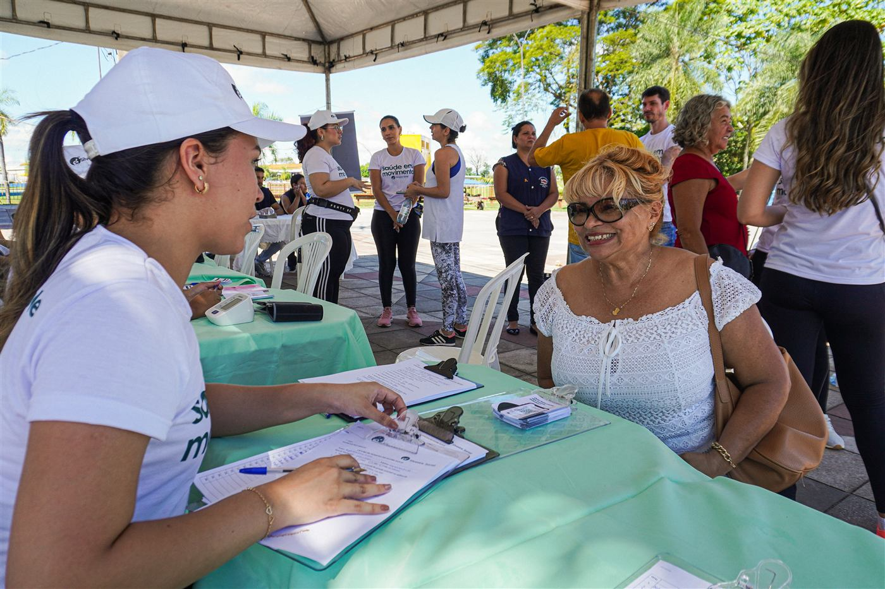
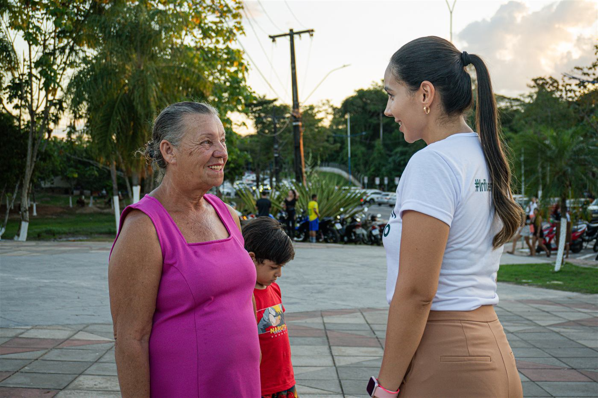
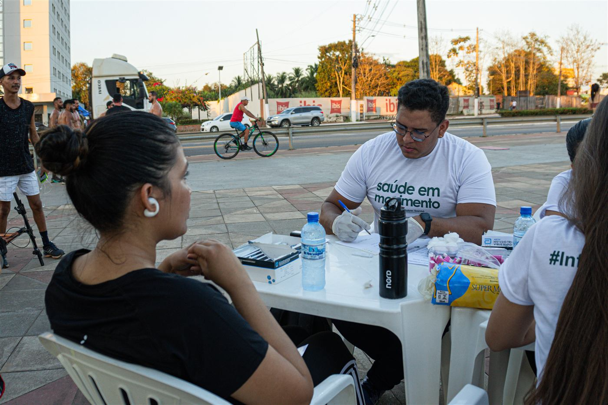

Uma solução integrada para comunidades, parceiros e investidores.
Desenvolvemos projetos sociais e humanitários voltados a mulheres, crianças, idosos, migrantes e comunidades tradicionais, ampliando o acesso e reduzindo desigualdades.

Oferecemos consultas especializadas, exames e diagnóstico com acompanhamento longitudinal, priorizando prevenção, rastreio e cuidado humanizado.
Conduzimos estudos clínicos multicêntricos em cardiologia, insuficiência cardíaca, hipertensão, obesidade e risco cardiovascular, seguindo Boas Práticas Clínicas, LGPD e aprovação CEP/CONEP.
Aplicamos inteligência artificial e soluções digitais em monitoramento e diagnóstico, ganhando eficiência e escalabilidade no cuidado em saúde.
Formamos profissionais por meio de educação continuada, pesquisa aplicada e parcerias com universidades, fortalecendo a capacidade técnica da região.
Mantemos um portfólio de projetos prontos para captação, com modelagem técnica e financeira, governança e indicadores definidos para ativação rápida.
Combinamos saúde, ciência e impacto social para ampliar qualidade de vida e desenvolvimento regional, com transparência, ética e sustentabilidade.
Articulamos parcerias com organismos nacionais e internacionais, poder público, academia, investidores ESG e filantropia.





-web.jpg)